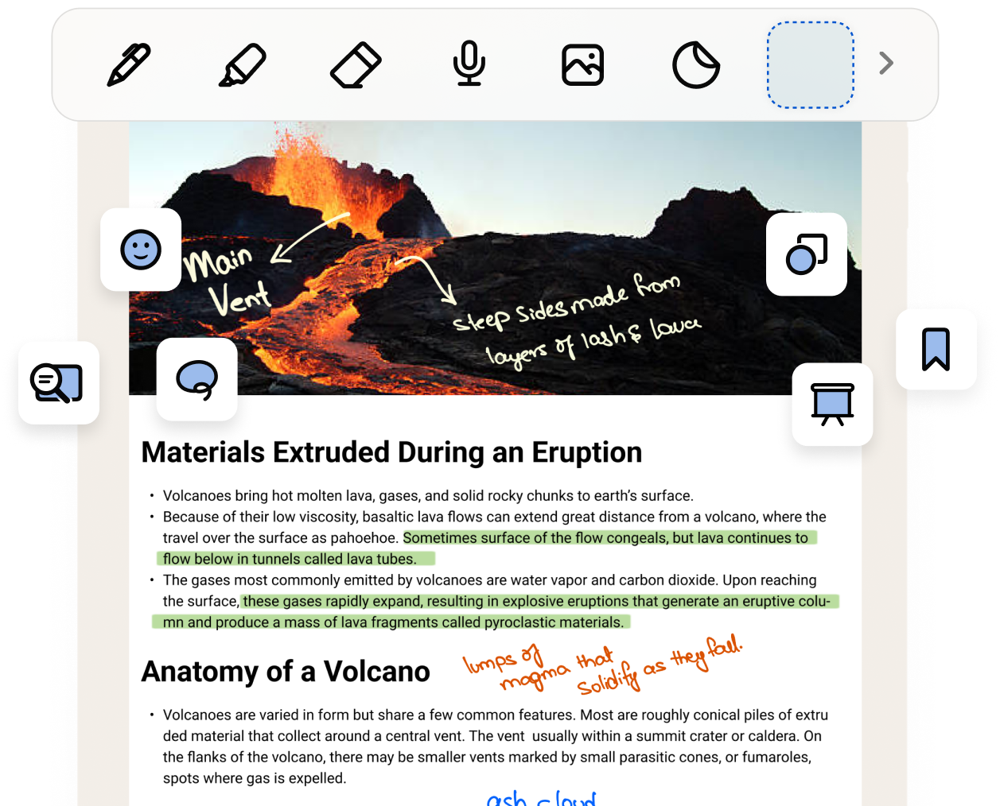
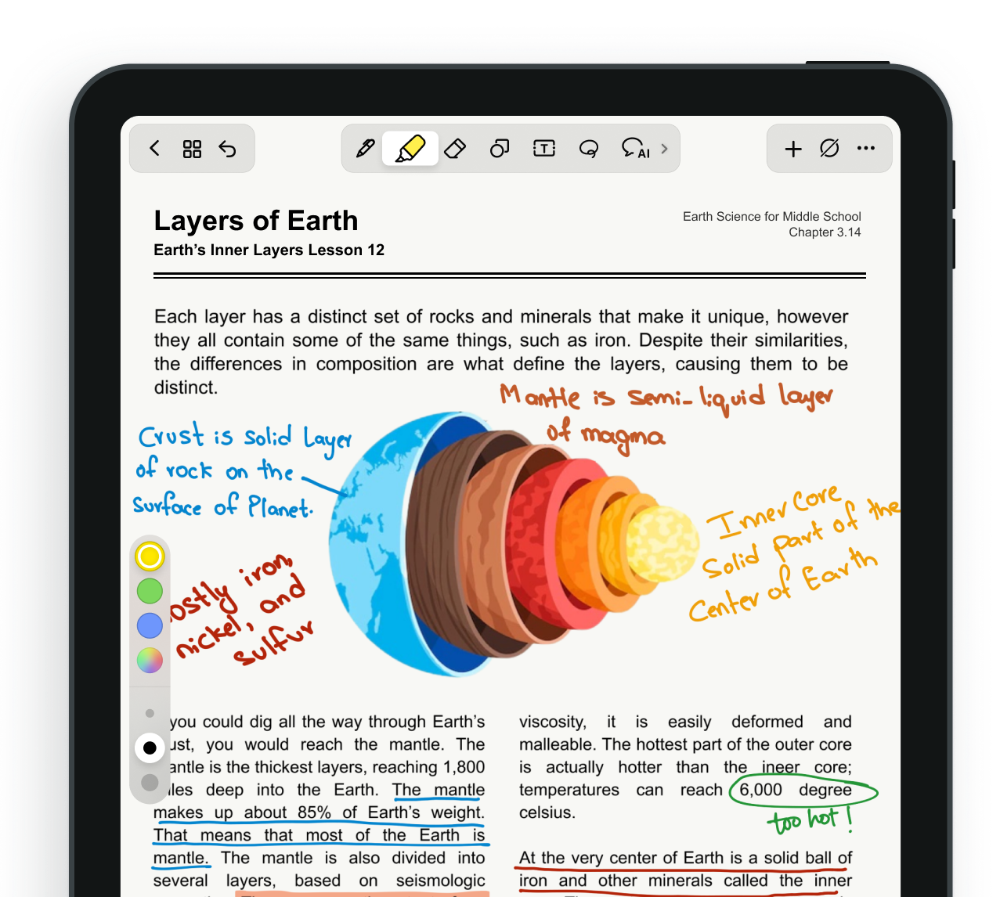

考研前一天 iPad 差点变砖头，我靠三年前的 WebDAV 备份救了命
备考时用 Noteshelf 记了整整九个月的错题本和课堂笔记，考前一晚 iPad 崩溃笔记本打不开，从慌到镇定再到完整恢复，这篇讲我踩过的坑和真正有用的备份方法。
我考研那年用的是一台 2018 款 iPad，屏幕上贴了三层膜，笔帽咬得坑坑洼洼。九个月的备考期里，所有数学错题、英语阅读的长难句拆解、政治大题的背诵框架，全都落在了 Noteshelf 的笔记本里。室友笑我把 iPad 当电子错题本用得比平板还狠，我当时只觉得这是最顺手的工具，直到考前一天的深夜——
崩溃是怎么发生的
那晚我在复盘最后一套模拟卷的数学错题，点开那个叫「数学冲刺」的笔记本时，屏幕转了足足一分钟的菊花，然后弹了一行提示：「这个笔记本由旧版本 Noteshelf 创建，需要更新应用。」
我点进 App Store，Noteshelf 确实有更新，点了升级。升级完再点开，还是同样的提示。我把应用删了后又从官方下载拿了安装包装回去，还是不行。那一刻后背直接出汗——九个月，整整六十多页的错题、每页密密麻麻的手写标记和裁剪下来的真题图片，全在这一个文件里。
我翻箱倒柜找了个旧充电器插上 iPad，脑子里闪过的第一个念头不是去找售后，是我三个月前好像跟着某个教程配过 WebDAV 备份到家里的群晖 NAS。那次折腾了半小时才通，后来就没管过，心里甚至还吐槽过「搞这么麻烦，云同步不就行了」。
转折：从「同步」到「备份」的认知差
Noteshelf 自带的云同步我一直开着，Dropbox 和 Google Drive 都登了。但那天在 Dropbox 网页端翻到 Apps/Noteshelf 文件夹，我发现同步过来的那个「数学冲刺」文件只有 2.3MB，而我本地记得是 80MB 以上——里面塞满了裁剪的真题照片和手写标记。
原来云同步只同步了文字层面的变更，大量的图片附件和手写墨迹数据，根本没完整传上去。这就是「同步」和「备份」最要命的区别：同步解决多设备访问，备份解决数据丢了还能找回来。我之前把同步当成了备份，这是第一个坑。
幸好那次折腾 WebDAV 时测试连接成功后，Noteshelf 就默认把本地变更也推一份到 NAS 了。我赶紧登上群晖的 DSM，找到当初创建的那个备份文件夹，果然看到了完整的笔记本文件，大小 83MB。下载下来，从 Noteshelf 的「导入」功能塞回去——别直接点文件打开，那样可能还是旧格式，导入是作为新笔记本载入，数据完整。
用了三年才摸透的笔记本质感
恢复之后我坐在床边，盯着 iPad 上那个重新亮起来的笔记本，突然想聊聊noteshelf官网到底好在哪。不是功能堆砌的好，是那种「每天用、每天舒服」的小细节。
笔具系统是我每天接触最多的东西。我自己攒了三档钢笔：1px 的细钢笔用来写解题过程，3px 的压力钢笔在不确定的步骤下面画波浪线，再用半透明的荧光笔把最终正确答案框起来。不同颜色的笔我都收在快速访问栏，取色器可以直接从教材截图上吸颜色，整套笔记的配色就不会乱。之前我试过 Notability，但它的压力钢笔只有两种粗细，对比下来 Noteshelf 的参数调节更细——粗细滑块拉到 50px 时已经接近毛笔效果，写中文大题标题特别有感觉。

图片标注是我备考阶段用得最多的功能之一。做题时用相机拍了真题卷，导入 Noteshelf 后直接在图片上用套索圈出计算错的那一步，用形状工具画箭头指向正确解法，旁边再用便签写一句「这里符号忘变了」。双指捏合缩放、旋转图片、调透明度当底图参考，这些操作在 iPad 上的手势体验特别顺。教材截图的注释、产品图纸的批注、旅行照片的日记注解，Noteshelf 这套图片上手写标记的能力，比纯文字笔记丰富太多。套索选局部移动、图片裁剪、调透明度当底图参考，更详细的手势和参数可以去noteshelf文档翻一遍。

后来我做了什么
恢复笔记之后我没有继续刷题，而是花了一个小时把整个备份体系理了一遍。现在我每天的 Noteshelf 笔记本有三份保障：自动同步到 Google Drive 解决多设备访问，WebDAV 推到家里的群晖 NAS 做实时备份，每月 1 号手动导出一次全部笔记本到移动硬盘做冷备份。
那个考前差点救了命的笔记本我一直留着，后来虽然没再打开，但它提醒我一件事：笔记软件选得再好，如果没有真正覆盖到图片和手写数据的备份，某天可能就是一场崩溃。很多人跟我之前一样，把云同步当成了备份，这个认知差比软件本身的功能更致命。
如果你也在用 Noteshelf，或者正打算开始用，去翻翻设置里的「同步与备份」——别只勾自动同步，再建一份 WebDAV 备份到你能完全掌控的存储里。坚果云、OwnCloud、群晖、威联通，哪个都行，测试连接只要几十秒，但真出事时那几十秒的折腾会变成救命稻草。
现在我毕业好多年了，那台 iPad 还在，Noteshelf 也换了好几个版本。考研笔记本的封面是我当时选的一个「冲刺红」模板，页边还有我用铅笔改错题留下的擦痕痕迹。偶尔翻开来看看，那些手写的公式和标记不只是知识，更像一段认真生活过的证据。
这套资料我也放到了三个代码仓库里——主仓库在GitHub方便开源社区协作，国内访问快的Gitee和GitCode也各存了一份——感兴趣的朋友可以去看看。